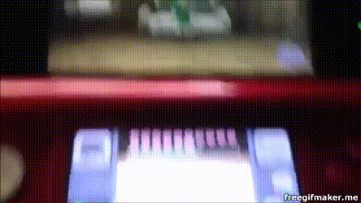

Exploits - The Thing That Did It All
Exploits were not very common at all in the beginning of the last few years. The only real exploit was Ninjhax, which was loaded using a QR code. You had to create a new application/payload for every different tool you wanted. Sure, it was annoying, but it was pretty neat to have something to work with. Over time, more and more different exploits came up, and the Hax* payload was created. A universal payload adapted from Ninjhax, all you needed was a way to load it and it would do the rest. So tons of exploits came up every other week. Ninjhax looked slightly different, but here was the Hax* payload loading via the Oot3dHax* exploit (pictured to the side).
All Current and Past Primary Hax* Exploits
| Exploit | Supported Firmwares | Requirements |
|---|---|---|
| Ninjhax 1.1b | From 4.0.0-7 to 9.2.0-20 | A cartridge (International) or eShop (Japan Only) version of Cubic Ninja | Ninjhax 2.x | From 9.0.0-7 to 11.3.0-36 | A cartridge version of Cubic Ninja. |
| Freakyhax | From 9.0.0-7 to 11.3.0-36 | A cartridge of "Freakyforms Deluxe" (eShop version not available) |
| Smilehax/BASICSploit | 9.0.0-7 to 11.0.0-33 | SmileBasic (Use BASICSploit for latest version) |
| BeaconHax | N3DS Only, 9.0.0-X to 11.3.0-36 | The SSB4 Game, and the abillity to broadcast raw wifi beacons. Version below v1.1.3 |
| Browserhax | 9.0.0-2 to 11.0.0-33 | Any compatible system version with a web browser. |
| Soundhax | 9.0.0-13 to 11.3.0-36 | A USA, EUR, JPN, or KOR reigon system. Taiwan and Chinese systems will not work. |
| TubeHax (deprecated, will never work again) | Was from 9.0.0-X to 10.1.0-27. Manipulated redirection of the web browser to use this exploit, and this was forcibly fixed (the app would not open without the latest version). | The Youtube application, with Internet. Since October 15, 2015, this will not work. |
Please note that GenHax is not included because it requires a Japanese copy of the game, plus the encryption key. Since the page is in english, JPN exclusive exploits were not included. SmileBasic and BASICSploit were different exploits, too. Secondary Exploits (Exploits requiring previous install or another exploit), are not included. Here is where you can find secondary exploits and a few old primaries.